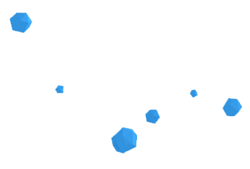

Isola is a VR experience that takes place in a fantasy world consisting of many floating islands. Special pieces representing forgotten dreams are scattered in the space. The player sails in Isola and has to find his lost pieces to become complete again. This project explores the boundaries of story development without conversation.
Using the movement of the bird to:
a. Direct the player to the intended place.
b. Cue the player to imitate the action. (ex. Throwing the ring)
c. Explain the possible interactions. (ex. Picking the star)
They are sailing in the air surrounded by many floating islands. The player picks up star pierces and put them on a stone table.
As the star rises up, A ring falls down from clouds and hits on the stone table in front of the player. The bird tells the player to pick the ring up.
The player enters into the world of Isola. A little bird gives greetings and signals the player to follow her to the voyager station.
The player combines two pieces of star collected. As these two pieces become a whole, a light brightens the dark sky.
Cued by the bird, the player throws the ring into the sky. Two fish jump into the sky from both sides of the voyager and hit the ring with their heads.